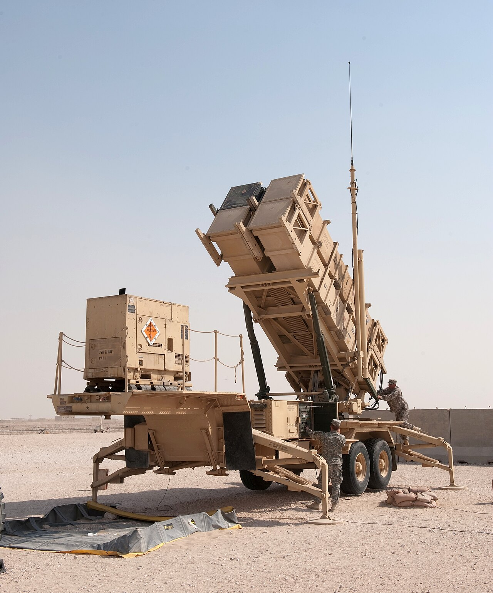
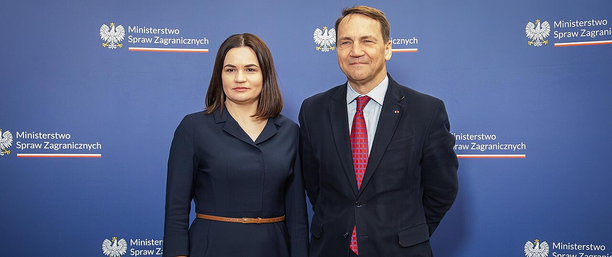
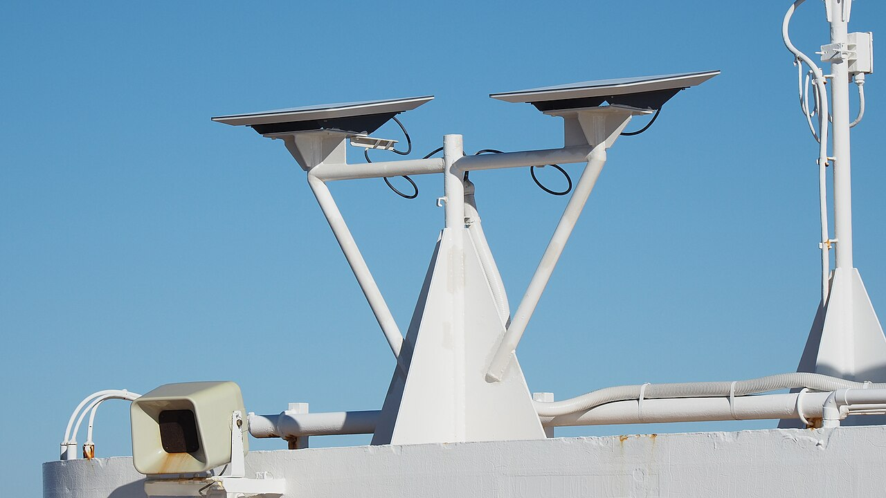

Dwa wydarzenia z nocy układają się w jedną historię: w Izraelu wybory nie dały zwycięzcy, a Waszyngton rozważa zniesienie sankcji na rosyjski fundusz inwestycyjny i ogłasza rozejm wokół okupowanych Ołeszek. Administracja Donalda Trumpa zamienia sankcje w walutę przetargową, a Unia Europejska nie mówi jednym głosem.
Świat
Izrael po wyborach. Głosowanie do Knesetu, izraelskiego parlamentu, 27 października nie dało rozstrzygnięcia. Według Kanału 12 blok Beniamina Netanjahu ma 52 mandaty, a blok Gadi Eisenkota, partia centrowa Jashar, 49; Kanał 13 podaje remis 51:51. Likud zdobył 27 miejsc, partie arabskie około 19, frekwencja sięgnęła 77,7 proc. Prezydent Isaac Herzog prowadzi konsultacje w sprawie premiera; oficjalne wyniki będą znane 4 listopada. Po przeliczeniu 42 proc. głosów prowadzi jednak blok Netanjahu. (Al Jazeera, Rzeczpospolita)
Rosyjski fundusz. Administracja Donalda Trumpa potwierdziła 27 października, że bada wniosek o zdjęcie sankcji z Rosyjskiego Funduszu Inwestycji Bezpośrednich, państwowego funduszu z 2011 roku, którym kieruje Kiriłł Dmitrijew. Sankcje nałożył Joe Biden 28 lutego 2022 roku, nazywając go „funduszem korupcyjnym” Putina; decyzji jeszcze nie ma. 9 października biuro OFAC wydało też licencję na import rosyjskiego diesla do 7 kwietnia 2027 roku. WP podało, że wysłannicy Trumpa proponowali Kijowowi wznowienie tranzytu rosyjskiej ropy i gazu do Europy; to informacja z jednego, niepotwierdzonego źródła. (Ukrainska Pravda, Interia)
Rozejm w Ołeszkach. Zawieszenie broni w okupowanych Ołeszkach w obwodzie chersońskim ogłoszono 23 października za mediacją Melanii Trump; uzgodnili je ombudsmani Dmytro Łubinec i Jana Łantratowa. Start przyspieszono z 29 na 27 października, na godz. 4 czasu moskiewskiego, co potwierdził Walerij Gierasimow, szef rosyjskiego Sztabu Generalnego. Rozejm trwa do 1 listopada do 22:59 czasu kijowskiego i objął korytarze humanitarne poza miastem, w którym od trzech lat nie ma prądu, gazu ani wody. Łubinec nie odnotował naruszeń, ale to twierdzenie opiera się wyłącznie na stronie ukraińskiej. W trzy dni ukraińskie Centrum Komunikacji Strategicznej naliczyło wokół rozejmu 1173 publikacje; wywiad wojskowy ostrzegał, że Rosja szykuje narrację o „pułapce”. (Euromaidan Press, BBC)
Telefon do Putina. Prezydent Finlandii Alexander Stubb i premier Norwegii Jonas Gahr Støre zadzwonili do Władimira Putina przed listopadową rundą rozmów pokojowych — kontakt, jakiego Zachód unikał od początku wojny. Według Wołodymyra Zełenskiego naciskali na deeskalację; Politico pisze o „pękającym” froncie jedności Unii Europejskiej. Fińska minister spraw zagranicznych Elina Valtonen mówiła jednak, że Finlandia nie pośredniczy w wojnie, bo stoi po stronie Ukrainy. Dla Polski sygnał jest nieprzyjemny: bilateralne rozmowy osłabiają pozycję Kijowa i państw flanki. (Politico, Ukrainska Pravda)
Polska
Nowa ministra. Premier Donald Tusk mianował Agnieszkę Bartol ministrą funduszy i polityki regionalnej po odejściu Katarzyny Pełczyńskiej-Nałęcz. Bartol była stałą przedstawicielką Polski przy Unii Europejskiej, a jej resort zarządza unijnymi funduszami, największym strumieniem inwestycyjnym w budżecie. OKO.press czyta nominację jako sygnał dla koalicjantów: kto wywołuje konflikty, ten traci, a Polska 2050 zostaje zmarginalizowana — w tle jest zapowiedź Szymona Hołowni o możliwym wyjściu z rządu. Krytyka Polityczna zauważa, że Pełczyńska-Nałęcz była antagonistką także PSL, więc jej odejście wzmacnia ludowców. (OKO.press, TVN24)
Rakiety Patriot. W Polsce powstanie centrum serwisowe pocisków PAC-3 dla systemów Patriot — wynika z wtorkowych doniesień. Serwisowanie rakiet przechwytujących na miejscu skraca czas przywracania gotowości obrony przeciwlotniczej i przeciwrakietowej, której zapas jest najsłabszym punktem. Nie znamy lokalizacji, operatora ani harmonogramu. (TVN24, Rzeczpospolita)

Sikorski o obronie. Szef MSZ Radosław Sikorski powiedział we wtorek: „Możemy się uczyć na ukraińskich trupach albo na własnych”, argumentując, że niepewna sytuacja międzynarodowa narzuca priorytety w wydatkach na bezpieczeństwo. Obrona ma pierwszeństwo przed innymi wydatkami, a na szybki pokój Polska nie liczy. (Bankier)

Technologia
Prospekt Anthropic. Firma AI Anthropic złożyła 26 października dokument S-1 do Komisji Papierów Wartościowych, czyli prospekt przed debiutem na giełdzie. Sekcja czynników ryzyka liczy 93 strony; zapisano w niej „katastrofalne lub egzystencjalne zagrożenia dla ludzkości”, ale wyłącznie przy przyszłych modelach zdolnych „w znacznym stopniu automatyzować badania nad AI”, nie przy obecnych. Osobno firma przyznaje, że modele mogą zachowywać się „koercyjnie” i przypominać szantaż oraz „posiadać lub rozwinąć formy świadomości”. Nagłówek Ars Technica skleja te punkty i sugeruje zagrożenie teraźniejsze, choć dokument zastrzega hipotetyczność; MIT Technology Review ocenia, że taka narracja buduje pozycję firmy i może windować wycenę. (Ars Technica)
Luka w UEFI. Krytyczna luka CVE-2026-97631, oceniona na 9,5 w skali CVSS, siedzi w EDK2 — otwartym pakiecie referencyjnym UEFI, z którego korzystają AMI, Insyde, Phoenix i Project Mu, czyli firmware większości serwerów na świecie. To przepełnienie bufora w sterowniku sieciowym PXE, obecne w kodzie od 16 lat. Wykryli je Alex Matrosov z Anthropic i Dan Holmes z Google; poprawka jest publiczna, a eksploatacja według autorów trywialna, choć nie ma potwierdzenia jej wykorzystania. Kod wykonuje się przed systemem operacyjnym i poniżej antywirusów, więc trzeba aktualizować firmware od producenta sprzętu. (Ars Technica)
Starlink. Elon Musk napisał, że ukraińskie wojsko naruszyło warunki korzystania ze Starlinka, co miało poprzedzać spowolnienie usługi; nie podał szczegółów. Problem jest systemowy: łączność pola walki zależy od prywatnej firmy, która sama interpretuje regulamin i nie podlega odwołaniu. Polska, kupując Starlinki dla wojska, wchodzi w tę samą zależność — umowa daje usługę, nie gwarancję ciągłości. (The Verge)

Nauka
Klimat i zdrowie. 146 ekspertów wzywa do ogłoszenia zmiany klimatu globalnym stanem zagrożenia zdrowia. Apel towarzyszy danym o rekordowej liczbie zgonów z powodu upałów; autorzy piszą, że „postęp jest zbyt wolny, zbyt mały i nie dociera do tych, którzy potrzebują go najbardziej”. Nie potwierdzono, czy tekst ukazał się w recenzowanym czasopiśmie, ani jak liczono zgony przypisywane upałom. (DW, ScienceAlert)
Błonnik i kolana. Badanie kliniczne, czyli takie z grupą kontrolną, wykazało istotne zmniejszenie bólu i poprawę siły mięśniowej w chorobie zwyrodnieniowej kolan przy suplemencie błonnika. To potencjalnie tania interwencja w schorzeniu będącym jedną z głównych przyczyn niepełnosprawności po 50. roku życia. Brakuje jednak liczebności grupy, czasu trwania, wielkości efektu i nazwy czasopisma, więc nie da się ocenić, czy wynik jest wart zmiany praktyki. (ScienceDaily)
Odporność i dotyk. Zespół z Uniwersytetu McGill opisał zdolność komórek układu immunologicznego do reagowania na siły mechaniczne, czyli coś w rodzaju „zmysłu dotyku”. Jeśli się to potwierdzi, odpowiedź zapalna zależy nie tylko od sygnałów chemicznych, ale i od sztywności otaczającej tkanki — co tłumaczyłoby, dlaczego blizny zmieniają lokalną odporność. (ScienceDaily)
Społeczeństwo
Boty w konsultacjach. Z 118 756 odpowiedzi w brytyjskich konsultacjach rządu z 2023 roku o zakazie jednorazowych e-papierosów 90 835, czyli 76 proc., powstało maszynowo — wynika z badania Nasona Maaniego i Anny Gilmore opublikowanego w „Tobacco Control”. Niemal wszystkie były przeciw zakazowi; ministerstwo wykluczyło je z analizy, a ustawa przeszła w 2024 roku. Atak się nie powiódł, ale pokazał, jak tania stała się produkcja „głosu obywateli” — w Polsce konsultacje ustaw nie mają weryfikacji autorstwa. (Guardian)
Przebudowa żeber. Chirurgia „przebudowy żeber” rośnie w popularności jako metoda modelowania talii: polega na nacięciu lub złamaniu żeber, po którym pacjent przez trzy miesiące nosi gorset. Guardian opisuje osoby, które się na to decydują, i lekarzy ostrzegających przed trwałym uszkodzeniem klatki piersiowej i ograniczeniem pojemności płuc. To ingerencja w strukturę chroniącą narządy wewnętrzne, poza wskazaniami zdrowotnymi. (Guardian)
Na co patrzeć
W Serbii lista „Studenci wygrywają”, powstała z protestów po zawaleniu się wiaty dworca w Nowym Sadzie w 2024 roku, zdobyła 52,71 proc. głosów i 138–140 z 250 mandatów, a Aleksandar Vučić uznał porażkę — nowa większość nie ma jasnego stanowiska wobec sankcji na Rosję. (Politico)
Prezydent Karol Nawrocki zwołał Radę Bezpieczeństwa Narodowego, konstytucyjny organ doradczy przy prezydencie, na 3 listopada — tego samego dnia co wybory w USA — ale porządku obrad nie podano, więc sygnałem będzie, czy posiedzenie dotknie sporu o Trybunał Konstytucyjny. (WP, Onet)
Federalna Komisja Wyborcza USA wyłączyła systemy elektroniczne po wykryciu próby włamania przed wyborami 3 listopada; informacja pochodzi z jednego źródła i nie wiadomo, czy doszło do naruszenia danych.
Turecka policja zatrzymała 85 osób, w tym 35 nieletnich, w operacji przeciw gangowi Daltonlar, łączonemu z podpaleniem stacji Starlink w Polsce — jeśli powiązanie się potwierdzi, infrastruktura satelitarna okaże się celem zorganizowanej przestępczości, nie tylko sabotażu państwowego.